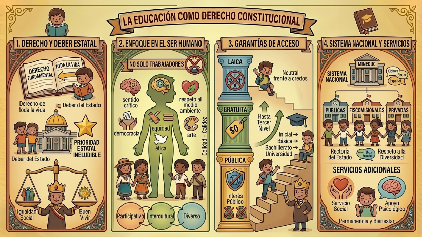

Al revisar nuestra Constitución, me di cuenta de que la educación va mucho más allá de ir a sentarse a un aula a recibir información. El Artículo 26 lo deja clarísimo: es un derecho que tenemos a lo largo de toda nuestra vida y, sobre todo, es un deber del Estado del que no se puede zafar por nada del mundo. No es un tema secundario, es un área prioritaria donde el gobierno tiene que invertir para asegurarnos igualdad social y darnos las bases para el famoso "Buen Vivir".

Nosotros en el centro de todo
Algo que me pareció genial del Artículo 27 es el enfoque que tiene. El sistema no busca fabricar máquinas de trabajo, sino que se centra en el ser humano para garantizar nuestro desarrollo holístico (es decir, en todas nuestras facetas). Todo esto cuidando el respeto a los derechos humanos, al medio ambiente y a la democracia.
Para que esto funcione, la educación no puede ser aburrida o excluyente. La ley dice que debe ser participativa, obligatoria, intercultural, diversa y, algo súper importante: de calidad y con calidez. La idea es que la escuela impulse la equidad de género, la justicia y la paz, mientras nos ayuda a despertar el sentido crítico, el arte, y las ganas de crear y trabajar.
Gratuita, laica y para todos
¡Ojo con esto! La educación responde únicamente al interés público (Art. 28), así que nada de ponerla al servicio de intereses de empresas o de unos pocos. El Estado nos garantiza que la educación pública sea para todos, completamente laica (sin meterse en temas religiosos) y gratuita hasta el tercer nivel (¡la universidad!).
Además, el Artículo 29 nos respalda con la libertad de enseñanza y de cátedra, y algo súper valioso para un país tan diverso como el nuestro: el derecho a aprender en nuestra propia lengua y entorno cultural.
¿Cómo funciona el Sistema Nacional?
Finalmente, los Artículos 343 y 344 nos explican que el Sistema Nacional de Educación es todo el conjunto: instituciones, programas, profes, estudiantes y recursos. Su meta principal es que desarrollemos al máximo nuestras capacidades.
Todo esto está bajo la lupa del Estado (que es quien lleva la batuta a través del Ministerio de Educación), y se ofrece en tres tipos de instituciones: las públicas, las fiscomisionales y las privadas. ¡Ah!, y siempre respetando la diversidad inmensa que tenemos en Ecuador.